Rock Climbing
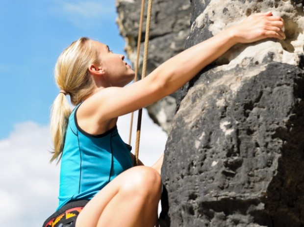
Cape Town is South Africa's rock climbing Mecca with over 200 multi-pitch routes in the city on Table Mountain alone. There are hundreds of crags outside of the city at Du Toit's Kloof, Montagu, Paarl, the Cederberg as well as other locations. There are great bouldering opportunities in Rocklands.
Numerous guidebooks are available but if your stay is short, opt for an experienced guide who will provide gear (no need to travel with heavy kit) and they will take you out to locations suited to your level and preferences.
Beginners are always welcomed. Instructors will show you the basics, teach you about safety and get you onto rock for your first rock climbing experience.
Rock climbing is a rewarding sport and Cape Town is one of the best locations for varied and accessible routes
Table Mountain offers rock climbers of all abilities world-class routes on high quality rock. The famous Mother City landmark itself offers inspiring traditional (“trad”) multi-pitch climbing and the surrounding crags of the Peninsula offers exceptional bolted sport climbing in scenic areas. The sport climbing is mostly single-pitch, but some multi-pitch routes are available.
Table Mountain climbing is mostly on sandstones.
Rock Climbing Trails
1. LION’S HEAD
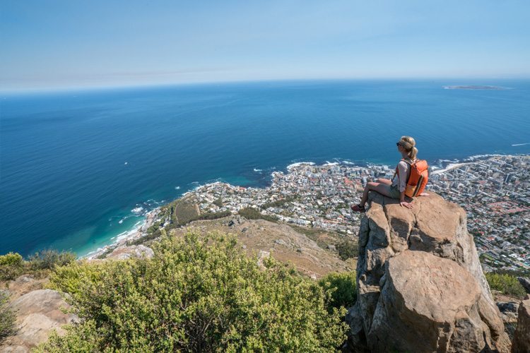
The distinct slope next to Table Mountain known as Lion’s Head offers magnificent views of the city, Table Bay and the Atlantic Ocean, making it a top spot for Instagrammers.
Starting and ending point Signal Hill Road, at the base of the Forestry Road.
Duration 2 – 3 hours
Need to know You will have lots of climbing, however there are handholds and chains to assist you. If, like me, you’d prefer to avoid the climbing, a roundabout route (that’s still quite steep) adds half an hour to your rock climbing adventure.
Child-friendly? Yes, although they’ll probably want to avoid the climbing chains (and rock scrambling near the end of the trail)
Dog-friendly? No
Contact 021 422 1601 (Kloofnek Office)
021 712 0527, Table.Mountain@sanparks.org
TMNP emergency numbers: 086 110 6417/ 107 or 021 480 7700
Location Lions Head
2. MONTAGU CLIMBING
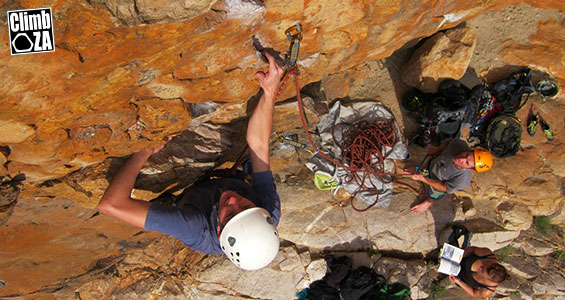
Montagu’s rock walls offer a wide variety of high quality climbing opportunities at every level from beginner to expert.
The area has over 450 climbing routes which cater for climbers of all levels of experience. Montagu is recognised as one of the outstanding climbing destinations in South Africa.
WHAT TO BRING:
Thin pair of extra socks
Hat
Sunscreen
Camera
1l water & a snack
Warm Top
Sport or mountain shoes
3. Rocklands
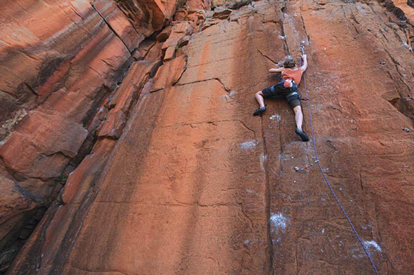
Rocklands is found in the Cederberg mountains 250km/3 hours north of Cape Town
It is a very beautiful area in a semi-desert setting, very isolated and very safe. Rocklands is undoubtedly famous for it's world class bouldering but this should not deter you from sampling the fine sport climbing.
There is a large variety of quality climbing of all grades in both bouldering and sport climbing. All the sport routes are single pitch and you will have to do a small amount of walking to get to the different areas. Most of the original climbing is situated on CapeNature land and thus day or week permits must be obtained. Permits for bouldering are not covered by Wild Cards.
Many of the newer areas being developed are on private farms some which have small (30-40 rand) day fees. The rock is a fine grain sandstone of medium hardness, excellent for climbing on due to its varied features. It is quite rough so you will surely need to plan rest days to re-grow some skin.
4. THE PIPE TRACK
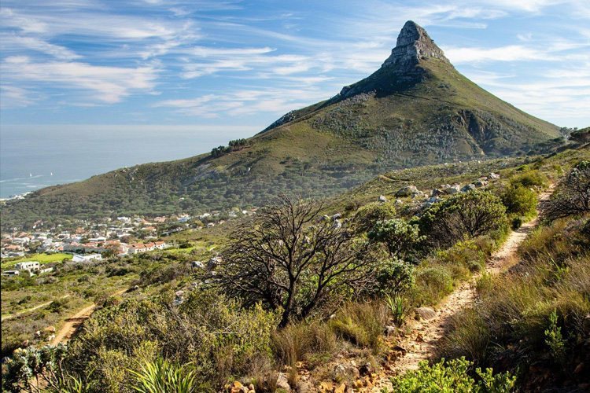
This trail is not only mesmerisingly beautiful, it also has an interesting history, in that it was built for the purpose of servicing a pipeline that used to supply 19th-century Cape Town with water from the Disa Gorge, hence its name…
Starting point The junction of Tafelberg Road and Kloof Nek (you can park your car in the Kloof Nek parking lot)
End point Camps Bay
Duration 4 hours.
The route is easygoing, although it becomes slightly tougher after passing by Slangolie Ravine.
Good to know There are a number of trails that lead off the Pipe Track, but these should not be attempted without the assistance of a knowledgeable guide. Many of these trails are not beginner-friendly, and they are not recommended for children or dogs.
If you do have a guide, it’s recommended to visit Tranquility Cracks, a hidden gem that Capetonian hikers have only recently discovered. These are narrow, labyrinthine tunnels through the rock, formed naturally through erosion.
Need to know The Pipe Track can be tough on hot days, as large portions of it are exposed to the afternoon sun.
Child-friendly? Yes
Location Table Mountain National Park
Camping
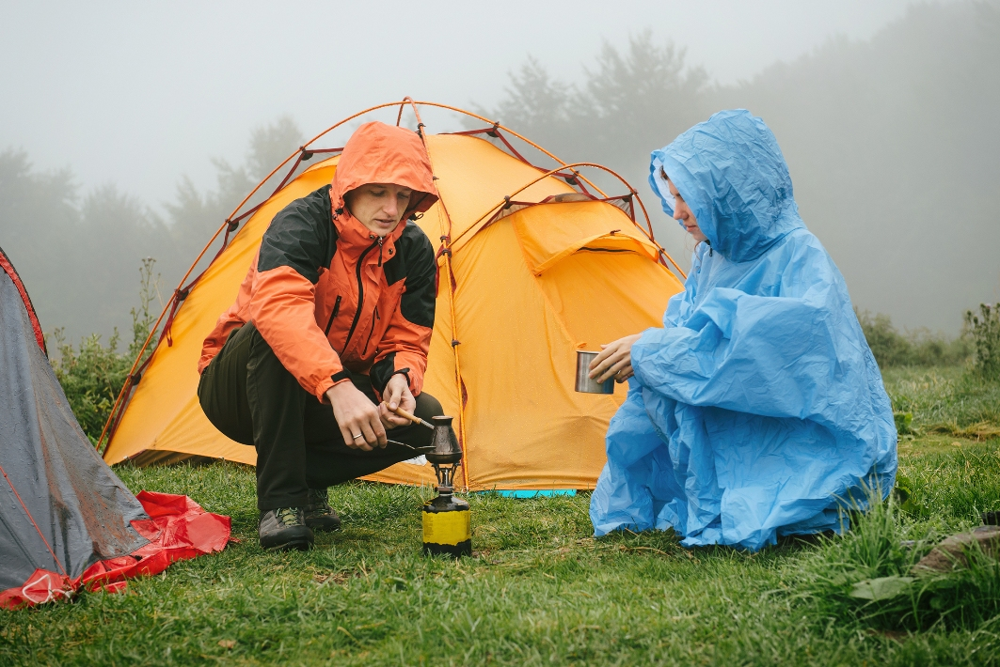
Camping Sites in the Western Cape! For your holiday trip and travel needs we have great deals, budget, cheap, and luxury holiday camping sites in the Western Cape tourism region and many short-term vacation and holiday venues in the area.
Camping can be an inexpensive way to escape the stresses of our modern lives. Sleeping under the stars, hiking, and cooking over a campfire all offer ways to reconnect with nature and relax.
But if thoughts of pitching a tent and building a campfire cause anxiety instead of bliss, your next camping trip could be a bust.
In order to have a great time camping, it’s important to remember to prepare well, include activities you enjoy, and be safe.
f you’re a reluctant camper, you will definitely enjoy yourself more if you’re excited about where you choose to camp. Think about combining your camping trip with seeing a new part of the country or exploring a different habitat.
Camping is a fun activity to do with friends and family.
Camping Sites
1. Badensfontein Self-Catering and Camping, Montagu
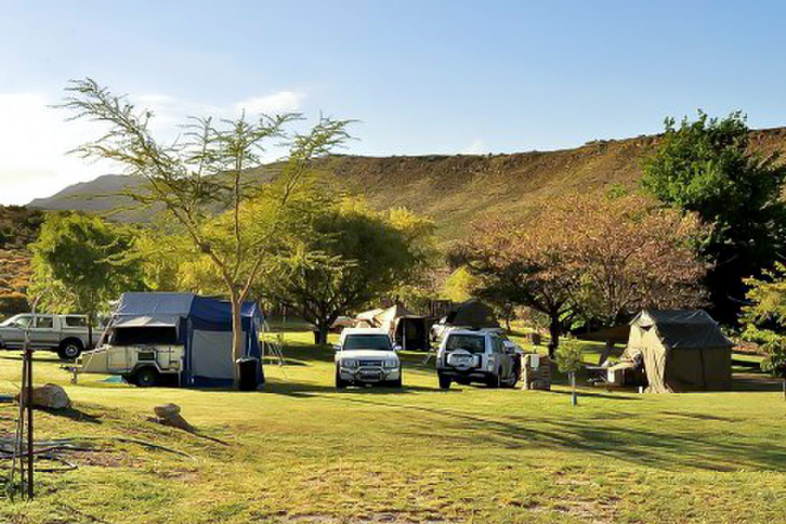
Baden Boskamp is tucked into a small, grassy hollow, 5km north of Montagu. Out of season or midweek, you’ll probably have the whole place to yourself – a huge rolling lawn surrounded by vineyards, shady trees, and small pool to cool off in. There are two lapas with power points and communal fridge, and portable braais to wheel out to your camp. These are limited however, so in peak season you might want to bring your own.
Number of stands: Open plan (about 25 stands), plus 5 self-catering cottages.
Electricity: Yes, at the lapas
Braai facilities: Communal, or bring your own portable braai
Shade: Plenty of trees, and two thatched communal lapas
Nearby activities: Montagu Hot Springs, wine tasting, mountain climbing, walks in the surrounding farmland
Cost: R100 per person
Contact: Tel 0236142187
2. Oewerzicht, Greyton
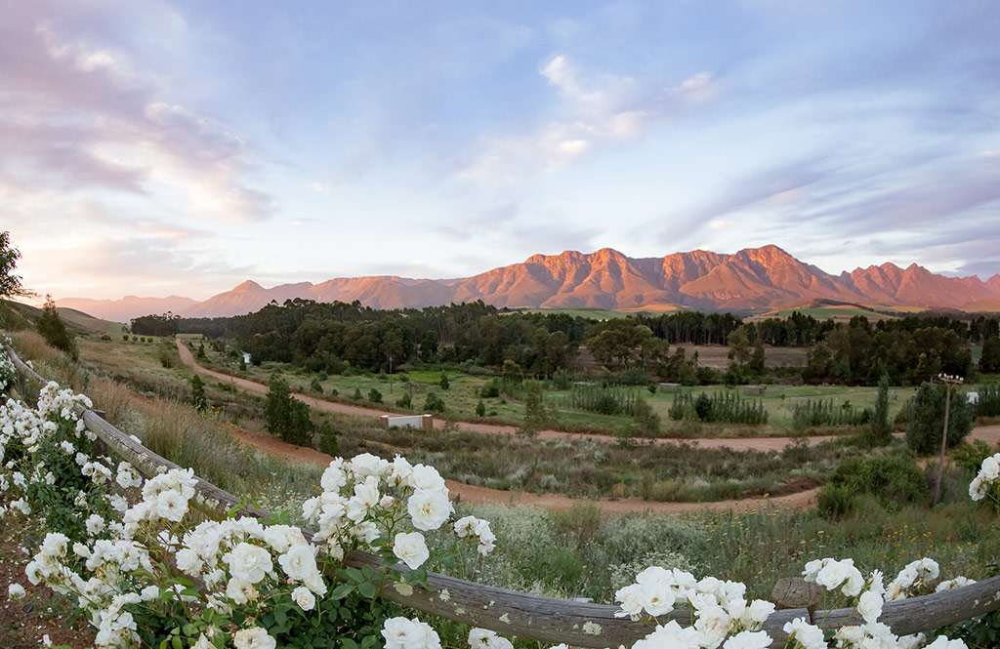
Sunset on the Langeberg is one of the most beautiful sights in South Africa, and Oewerzicht is a wonderful place to enjoy it. Apart from the stunning scenery, there’s also fishing and canoeing in the Riviersonderend River which gurgles right past the campground, plus hiking and mountain biking through the surrounding farmland. The ablutions are modern and first class and if you need supplies, the charming town of Greyton is just down the road.
Number of stands: 25, plus various cottages and safari tents nearby
Electricity: Yes
Braai facilities: Yes – bring your own grid
Nearby activities: 25km mountain bike trail nearby, tractor rides (R50 per group of 5), hiking, swimming and tubing, Greyton Saturday market
Important info: The dirt road to the campsite is potholed, but sedan-friendly. Only one caravan per stand. Portable hot tubs are also for hire (R500 for the weekend)
Cost: R330 per stand (4 people), R90 per person thereafter (max 6 per stand)
Contact: Tel 0282549831
3. River Goose, Bonnievale
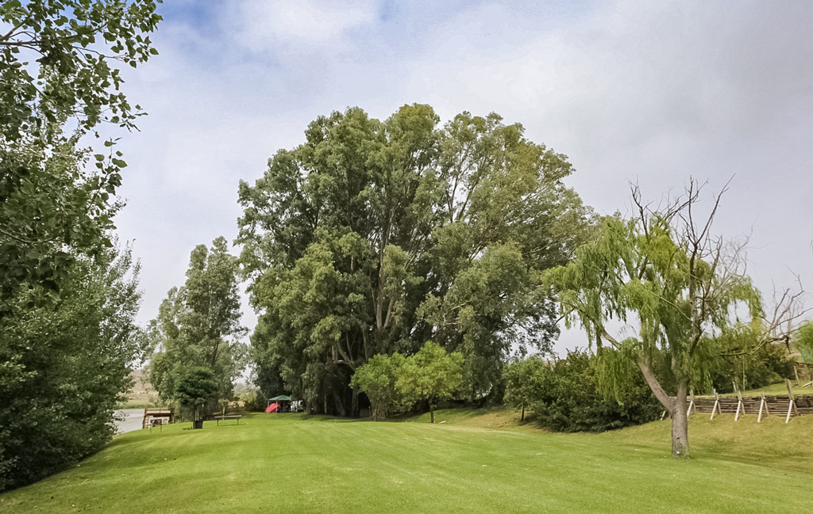
Beautiful, green lawns flow into the Breede River at Eureka Farm’s River Goose Campsite. Spend your days canoeing or tubing in the warm river water, or pop down the road to one of the many wine farms for a tasting (Van Loveren Family Wines does an excellent cheese and wine pairing). Campsite owner, Kelvin, also operates a large double-decker barge for river cruises.
Number of stands: 19
Electricity: No, but hot showers and solar lighting are available
Braai facilities: Yes – one drum and grid per campsite
Nearby activities: Wine tasting, fishing, barge cruises on the river (R100 per person for an hour and a half)
Important info: No loud music. Pets must be looked after so as not to be a nuisance to other campers
Cost: R120 per person
Contact: Tel 0827595727
4. Cape Nature: Grootvadersbosch, Langeberg
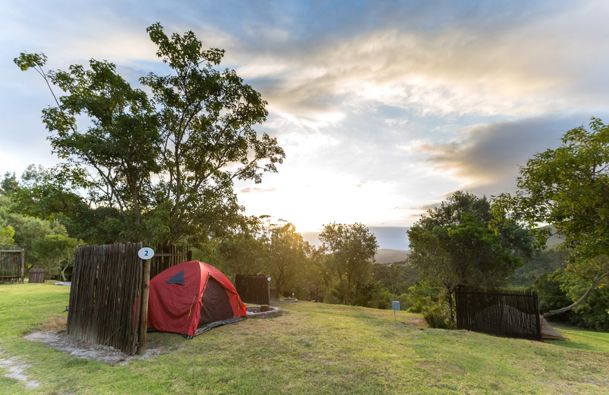
If you love towering trees, magical mountain views and wonderful birdlife, then get yourself to Grootvadersbos, perhaps Cape Nature’s most beautiful forest reserve, in the foothills of the Langeberg Mountains. Hiking and birding are the main attractions here, along with the 60-metre-high redwoods that are just a short walk from the campsite. Neat and compact, this is a wonderful little campsite and the recently renovated ablutions are some of the best you’ll ever find at a campground.
Number of stands: 10, plus 12 self-catering cottages available nearby
Braai facilities: Yes, but bring your own grids.
Nearby activities: Short, local trails and overnight hikes into the Boosmansbos Wilderness Area
Important info: Grootvadersbos is a high rainfall area so be sure to check the weather before travelling. You might want to book one of their new self-catering cottages if the elements turn
Cost: Off-peak, R300 per stand and peak R370 per stand (6 people).
Contact: Tel 0214830190
Fishing
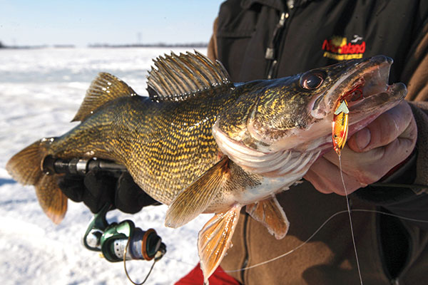
Fishing is a relaxing and enjoyable activity and can be an opportunity to teach children about nature. Bring the whole family and enjoy a braai or picnic. Here are a few child-friendly catch and release fishing spots in Cape Town, each offers fishing and loads of other activities and fun things to do.
The Western Cape is well known for its beautiful scenery, wild flowers, beaches and mountains. Fortunately the Cape is also blessed with the sea, to the west the Atlantic Ocean and to the south east the Indian Ocean. Depending on who is telling the tale the Indian and Atlantic oceans either meet at Cape Agulhas or Cape Point.
Nobody really knows as the Agulhas current does not stop dead at Cape Agulhas nor does the Benguela current which flows northwards turn left to avoid Cape Point.
There are many people who like to go and put a line in the water for a bit of relaxation and I count myself as being one of them. Fishing off the beaches is good along the Muizenberg coastline but take precautions and do not go fishing alone as it is unsafe to do so.
The coastline on the eastern side of False Bay can also be good and fish such as Kob, Steenbras and elf are often landed here. The area near Strandfontein and Swartklip is good for Kob.
Fishing Sites
1. Gansbaai
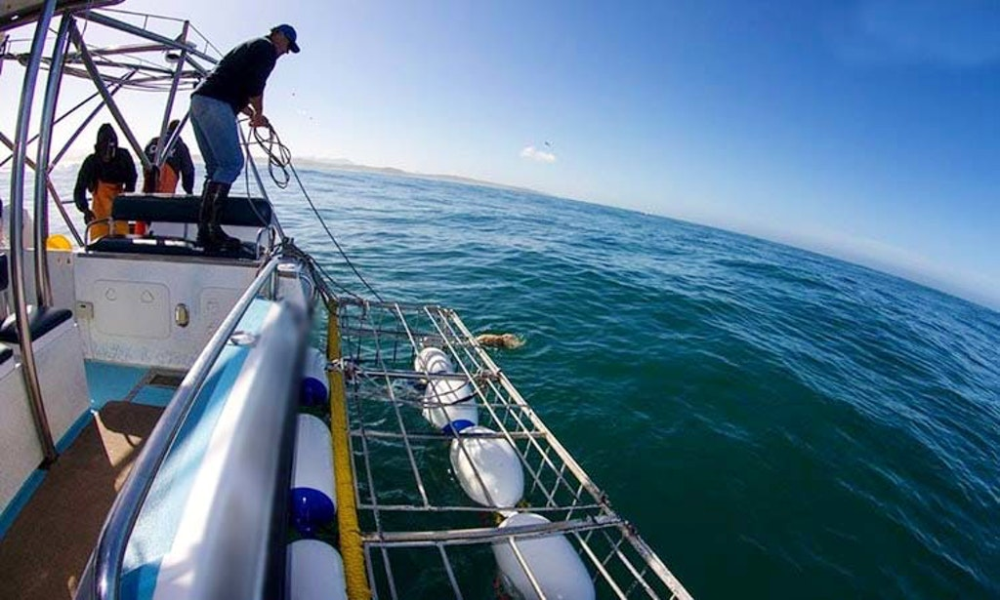
Spot Description: Die Dam is a well known spot that produce Galjoen or White Steenbras during the cooler months and Silver Kob during the summer months . Use a medium ledger or strayline rig with Sand Prawns, Red Bait or Bloodworm as bait to target the Galjoen and White Steenbras. Use a heavier ledger or strayline rig with Pilchard or Squid to target Silver Kob. The occasional Musselcracker is also caught along the beach.
Expected Catch: Galjoen, White Steenbras (Wit Steenbras)
Best season to fish this spot: All Year
Time of day: Pushing High
Bait/Softbait used: Sand Prawns, Bloodworm, Red Bait, Pilchard, Squid
Coordinates: 34°46’07.1″S 19°45’51.2″E
2. Cape Hangklip Fishing – Ospunt Rocks
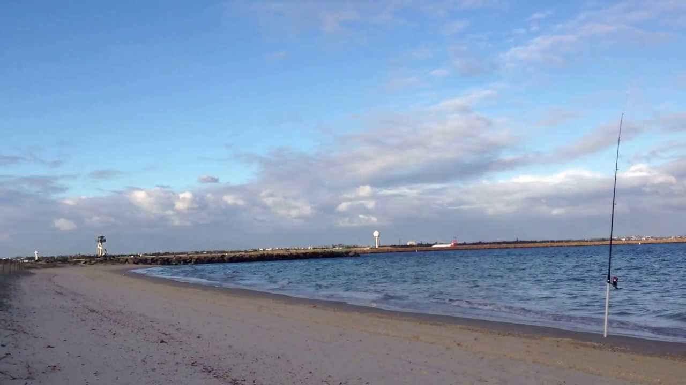
Spot Description: This spot at Cape Hangklip can produce Geelbek and Silver Kob during the summer months and Galjoen or White Steenbras during the winter months (after stormy waters). Take care fishing of the rocks and use a heavy ledger or strayline rig with Pilchard, Sand Prawns or White Mussel as bait to target the Geelbek and Silver Kob. Target the Galjoen and White Steenbras using a medium ledger or strayline rig with rotten Red bait or Bloodworm as bait.
Expected Catch: Geelbek, Silver Kob (Kabeljou), Galjoen, White Steenbras (Wit Steenbras)
Best season to fish this spot: Late Winter, Summer
Time of day: Tide Change, Low
Bait/Softbait used: Sand Prawns, White Mussel, Pilchard, Red Bait, Bloodworm
Coordinates: 34°22’50.6″S 18°49’58.1″E
3. Bloubergstrand – Surfcast Fishing
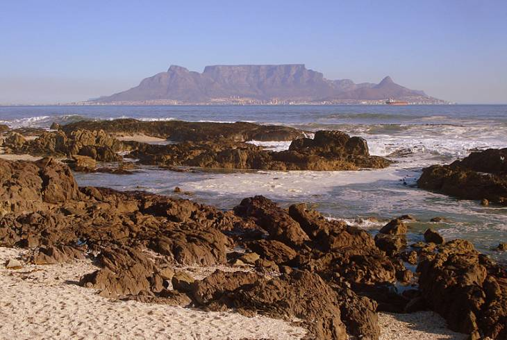
Spot Description: The Bloubergstrand beach provides good fishing areas during the winter months. Use surfcasting tackle with a ledger or strayline rig and white mussel as bait. The area consistently produce good sized Galjoen off the beach during winter after the northwesterly has blown.
Expected Catch: Galjoen
Best season to fish this spot: Winter, Spring
Time of day: High Tide
Bait/Softbait used: White Mussel
Coordinates: 33°47’20.8″S 18°27’10.6″E
4. Langebaan – Kraal Baai Fishing
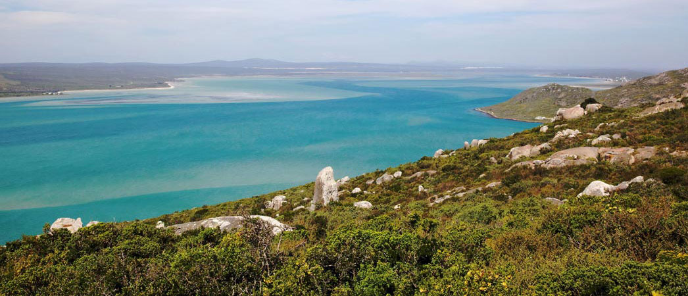
Spot Description: This area borders the Langebaan Marine Protected Area near Kraal Baai. Use a live bait ledger rig with pilchard or squid as bait about 2 meters below the surface to target Yellowtail or Shad (Elf). Use pilchard or sand prawn as bait to target White Stumpnose. Best chance for success at high tide, turning low.
Expected Catch: Yellowtail, Shad, White Stumpnose
Best season to fish this spot: Summer, Fall
Time of day: High Tide
Bait/Softbait used: Pilchard, Squid, Prawns
Coordinates: 33°08’28.0”S 18°01’59.6”E
Hiking
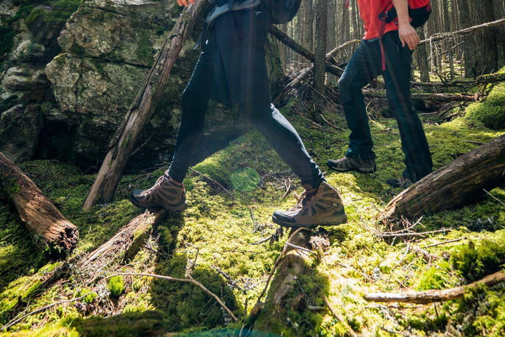
When you start hiking, it can seem strange, putting on special boots and clothing, strapping on a backpack and making sure you have everything you need for what’s really a walk in the country.
Of course, there’s a reason for it, as you’ll discover if you’re caught in the rain or walking through a muddy or boggy area – at that point anything that keeps you dry (or at least drier) is welcome.
I could not agree more. I personally enjoy hiking and backpacking as a way to experience the beauty of the outdoors, and as a fitness coach, I recommend that everyone go hiking. It is a perfect way to build a solid foundation for fitness and health. I can’t think of a single activity that provides more fitness enjoyment and benefits than hiking.
I also know that sometimes we experience fatigue or pain which might detract from our enjoyment. Back pain and knee pain are very common. But is the hiking to blame? Not according to the physical therapist who once told me, “If people hiked regularly, I’d be out of business.” It’s my observation that the hours we spend sitting in an automobile or at our desks cannot help our posture and overall balance. In coaching, I try to address this imbalance in simple and effective ways that will always increase body awareness and efficiency
Hiking Trails
1. LION’S HEAD
The distinct slope next to Table Mountain known as Lion’s Head offers magnificent views of the city, Table Bay and the Atlantic Ocean, making it a top spot for Instagrammers.
Starting and ending point Signal Hill Road, at the base of the Forestry Road.
Duration 2 – 3 hours
Need to know You will have to do some climbing, however there are handholds and chains to assist you. If, like me, you’d prefer to avoid the climbing, a roundabout route (that’s still quite steep) adds half an hour to your hike.
Child-friendly? Yes, although they’ll probably want to avoid the climbing chains (and rock scrambling near the end of the trail)
Dog-friendly? No
Contact 021 422 1601 (Kloofnek Office)
021 712 0527, Table.Mountain@sanparks.org
TMNP emergency numbers: 086 110 6417/ 107 or 021 480 7700
Location Lions Head
2. PLATTEKLIP GORGE
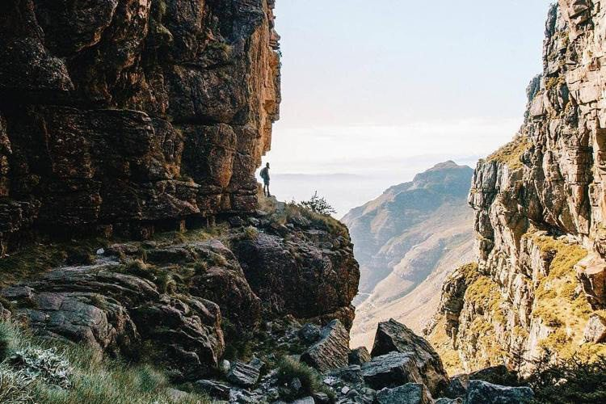
Probably the second most well-known hiking trail in Cape Town (after Lion’s Head), Platteklip is not so easygoing, despite its popularity. Sure, there’s not much climbing or scrambling involved, but there’s a lot of upward walking, which probably makes it the ideal route for a workout. It provides a direct route to the summit of Table Mountain, for those who think taking the cable car is for lightweights.
Starting point Tafelberg Road
End point Upper Cableway Station
Duration 3 hours, though some ridiculously fit people have been known to run up the trail in an hour.
Need to know Platteklip is best avoided on a hot day, as there is little shade to be found along the trail.
Be prepared for all types of weather, and bring a hat, sunblock and jacket.
Proper hiking shoes are required; do not attempt this trail with slip-slops.
Important note SANParks has informed us that many rescues are performed at this site, as people underestimate the heat and the level of fitness required, or they miss the last cable car and end up stranded on the mountain at night. Please take the necessary precautions.
Child-friendly? Yes, although take note of the above.
Location Table Mountain National Park
3. THE PIPE TRACK
This trail is not only mesmerisingly beautiful, it also has an interesting history, in that it was built for the purpose of servicing a pipeline that used to supply 19th-century Cape Town with water from the Disa Gorge, hence its name…
Starting point The junction of Tafelberg Road and Kloof Nek (you can park your car in the Kloof Nek parking lot)
End point Camps Bay
Duration 4 hours.
The route is easygoing, although it becomes slightly tougher after passing by Slangolie Ravine.
Good to know There are a number of trails that lead off the Pipe Track, but these should not be attempted without the assistance of a knowledgeable guide. Many of these trails are not beginner-friendly, and they are not recommended for children or dogs.
If you do have a guide, it’s recommended to visit Tranquility Cracks, a hidden gem that Capetonian hikers have only recently discovered. These are narrow, labyrinthine tunnels through the rock, formed naturally through erosion.
Need to know The Pipe Track can be tough on hot days, as large portions of it are exposed to the afternoon sun.
Child-friendly? Yes
Location Table Mountain National Park
4. MACLEAR’S BEACON
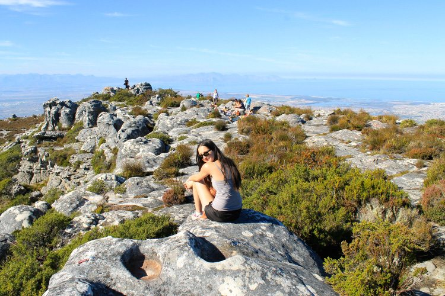
At 21 metres above the Upper Cableway Station, Maclear’s Beacon is the highest point on Table Mountain. Plaques at the Upper Cableway Station point you towards the beginning of the hike, and from thereon the trail is marked by yellow footprints. If you do the Platteklip and Maclear’s Beacon trails in one go, then you can truly say you hiked from the bottom of Table Mountain to the very top.
Starting point Upper Cableway Station
End point Maclear’s Beacon
Duration 1 hour
Need to know SANParks does not recommend attempting this trail in cloudy or misty weather, as it becomes more difficult to find your way in such conditions.
Child-friendly? Yes
Contact 021 712 0527, Table.Mountain@sanparks.org
TMNP emergency numbers: 086 110 6417/ 107 or 021 480 7700
Location Table Mountain National Park